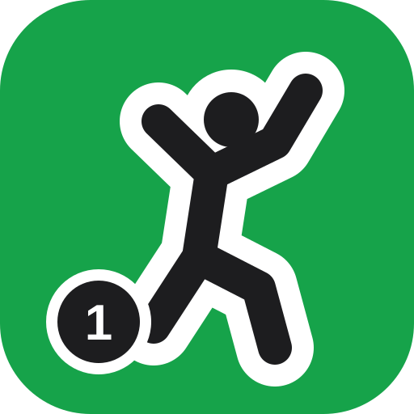

Add a video or start the camera
Where's the dance coming from?
Prop your phone on a tripod and fit your whole body in the frame. Nothing leaves your device.

Sticker StopProp your phone on a tripod and fit your whole body in the frame. Nothing leaves your device.